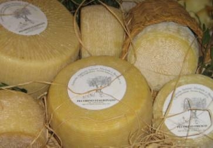
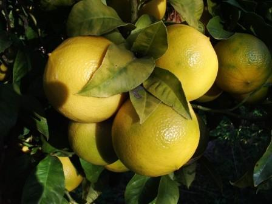
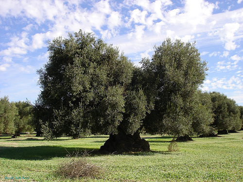
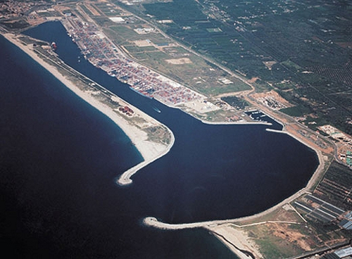
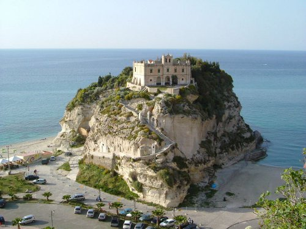
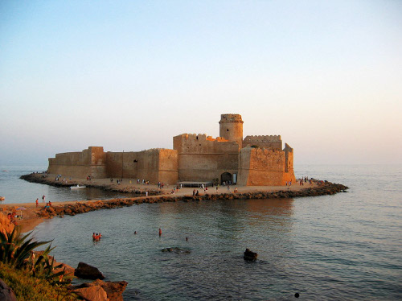

ATTIVITA'
ECONOMICHE
L' economia calabra non è molto ricca anche se in Calabria si producono prodotti rinomati. L' agricoltura è abbastanza sviluppata e viene praticata nelle pianure costiere. Si coltivano l'olivo (secondo posto in Italia), gli agrumi (anch' essi al secondo posto), i pomodori e la Cipolla di Tropea, famosa in tutto il mondo. Importante e praticato è l' allevamento dei caprini (secondo posto in Italia). La pesca è un'attività discretamente sviluppata. L' industria è un settore economico poco sviluppato. Sono presenti industrie metalmeccaniche, chimiche e petrolchimiche (a Reggio di Calabria, Crotone e Vibo Valentia). A Gioia Tauro c'è un importante porto commerciale. Il turismo balneare è molto sviluppato, sia sul Mar Tirreno, che sul Mar Ionio, dato che, eccetto la Sicilia e la Sardegna, che sono isole, la Calabria è la regione italiana più bagnata dal mare. I centri balneari calabri sono molto frequentati: Isola di Capo Rizzuto (sul Mar Ionio) e Tropea (sul Mar Tirreno). Mancano buone vie di comunicazione, anche a causa della 'ndrangheta che è un'organizzazione criminale che si arricchisce in modo disonesto, rubando soldi pubblici. Alla 'ndrangheta è legato anche il problema dell'abuso edilizio, infatti molte case vengono costruite dove non è consentito e altre, crollate per disastri naturali (esempio alluvioni), vengono ricostruite male, senza le regole di sicurezza.
|  |
 |
 |
| pecorino |
bergamotto |
ulivo |
|  |
 |
 |
| porto di Gioia Tauro |
Tropea |
Isola Capo Rizzuto |
Home Territorio Popolazione Specialità Personaggi Storia Curiosità